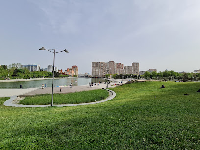

Parklar
- Baku Bulvari
- Gençlik Parkı
- Fevvareler Meydanı
Baku Bulvari
Bakü Bulvarı, Azerbaycan'ın başkenti Bakü'de, Hazar Denizi kıyısında yer alan tarihi ve modern bir sahil parkıdır. 1909 yılında kurulan bu alan, zamanla genişletilerek günümüzde 26 kilometre uzunluğa ulaşmıştır. Bulvar, yürüyüş yolları, kafeler, restoranlar ve eğlence tesisleriyle donatılmış olup, ziyaretçilere huzurlu bir atmosfer sunar. Bulvar boyunca Azerbaycan Halı Müzesi ve Bakü Kristal Salonu gibi önemli yapılar bulunur. Ayrıca, geniş yeşil alanlar ve çiçek bahçeleriyle doğayla iç içe vakit geçirme imkanı sağlar. Hazar Denizi'nin muhteşem manzarası ve akşamları ışıklarla aydınlanan bulvar, özellikle akşam yürüyüşleri için idealdir. Bakü Bulvarı, şehrin sosyal ve kültürel yaşamının merkezlerinden biri olup, hem yerli halk hem de turistler için vazgeçilmez bir destinasyondur.

Gençlik Parkı
Gençlik Parkı, Azerbaycan'ın başkenti Bakü'nün merkezi bölgelerinden birinde yer alan ve şehrin sosyal yaşamında önemli bir yer tutan popüler bir parktır. Gençlere ve ailelere yönelik olarak tasarlanmış olan park, açılışından bu yana hem yerel halkın hem de turistlerin uğrak noktalarından biri olmuştur. Geniş yeşil alanları ve modern peyzaj düzenlemeleriyle dikkat çeken Gençlik Parkı, doğa ile iç içe bir ortam sunar. Parkta gençler ve çocuklar için oyun alanları, yürüyüş yolları ve spor sahaları gibi çeşitli eğlence ve dinlenme tesisleri bulunmaktadır. Ayrıca, kafe ve restoranlar da ziyaretçilere dinlenme ve sosyal aktivite imkanı sunar. Zaman zaman düzenlenen konserler, tiyatro gösterileri ve çeşitli kültürel etkinlikler, parkın cazibesini artırır ve toplumsal bir buluşma noktası olarak öne çıkmasını sağlar. Özellikle hafta sonları ve tatil günlerinde yoğun ziyaretçi akınına uğrayan Gençlik Parkı, Bakü'nün canlı ve dinamik yaşam tarzının bir parçası olarak, hem estetik hem de fonksiyonel açıdan önemli bir yere sahiptir.